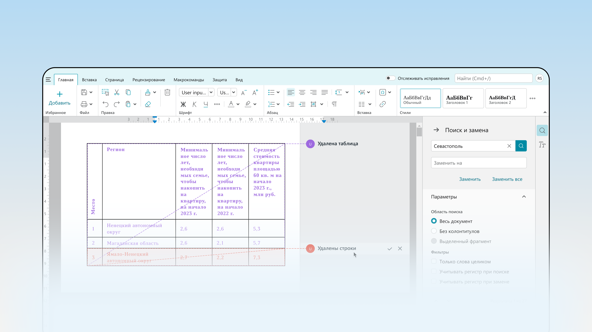
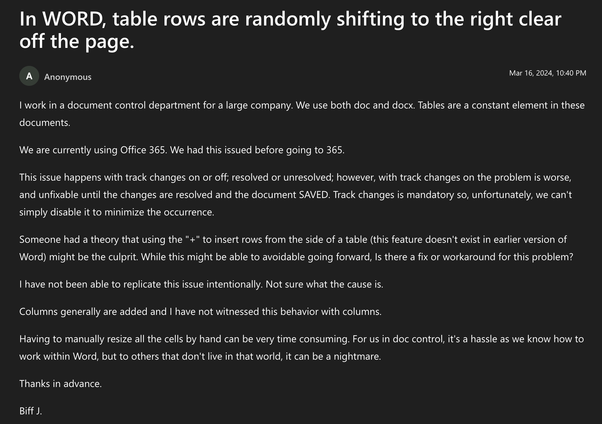
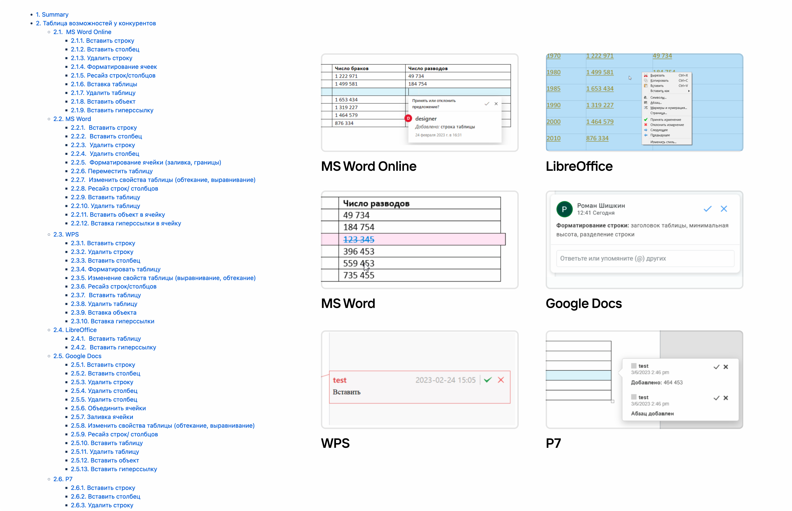
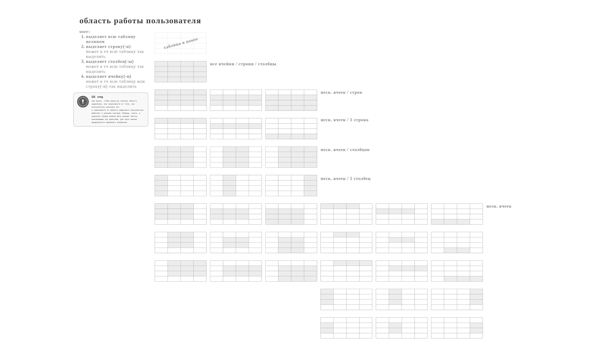
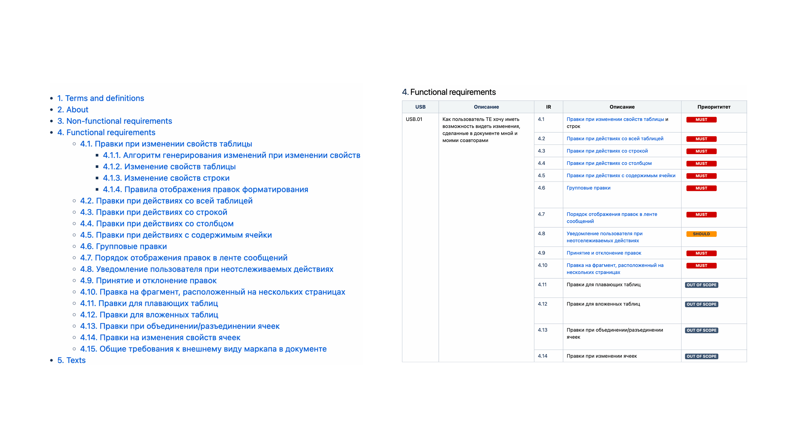
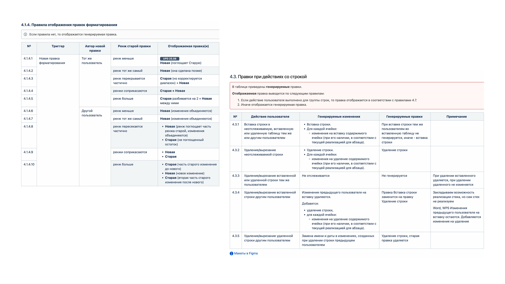
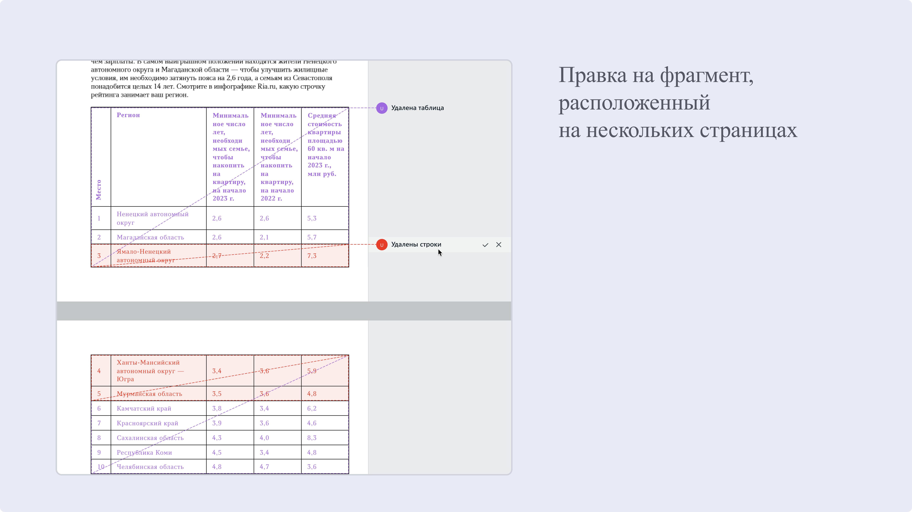
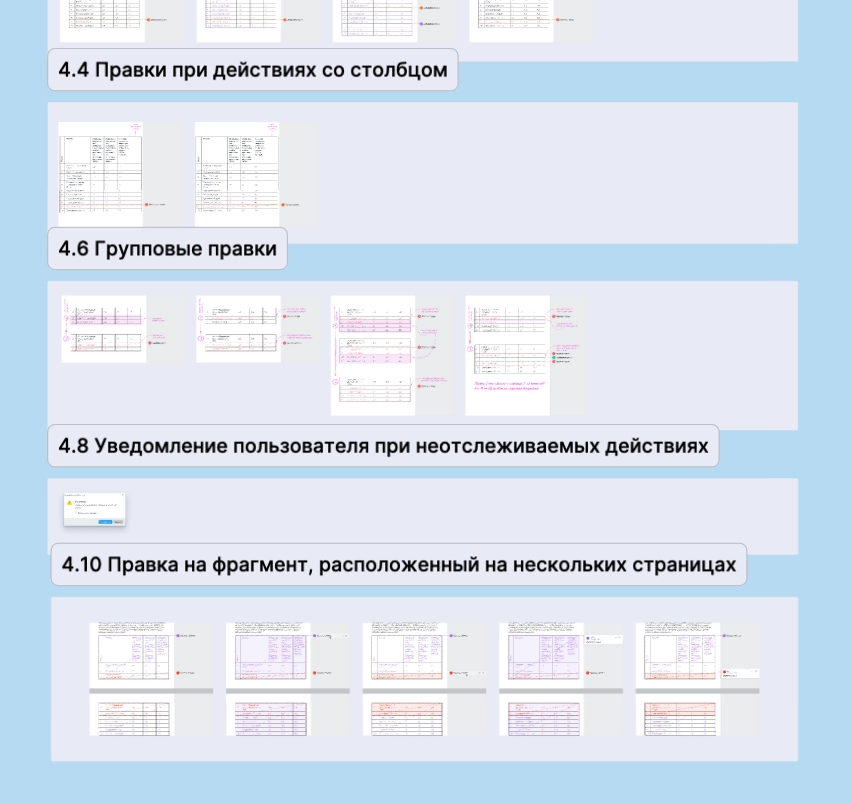

Отслеживание изменений в таблицах. Выпустили MVP в срок, пофиксив UX-пробелы конкурентов
Продуктовая работа над MVP функционалом рецензирования таблиц в текстовом редакторе документов МойОфис
0→1 · Настольный редактор · B2B · B2C · B2G · Product Design · UX

Продукт: настольные редакторы документов МойОфис
МойОфис — компания, производящая экосистему офисных приложений: облачные хранилища, редакторы документов, почтовые системы и тд.
- 12+ лет на рынке
- 12 500+ клиентов различных секторов рынка уже используют ПО МойОфис
- 4 500+ партнеров во всех регионах РФ
- 1 000+ сотрудников
В настольном текстовом редакторе я проектировала отслеживание изменений в таблицах: от анализа задачи и проверки пользовательских ожиданий до интерфейсных состояний и спецификации.

Пользователи и проблема
Пользовательские роли
Автор документа — пользователь, который просматривает правки, принимает или отклоняет их.
Соавторы, согласующие и рецензенты — пользователи, которые предлагают правки.
Контекст работы с таблицами
Соавторы и согласующие предлагают изменения, автор документа принимает или отклоняет их. Работать с документом можно офлайн, онлайн и одновременно с другими пользователями.

Проблемы
Редактор отслеживал изменения текста, но не все изменения структуры и форматирования таблиц.
Часть правок из сторонних редакторов автоматически принималась или терялась.
Пользователям приходилось вручную сравнивать версии документа.

Задача
Реализовать возможность предложить изменения таблицы, проверить их и продолжить согласование документа из другого редактора без потери правок.
Моя роль и команда
Я анализировала сценарии и конкурентов, проводила коридорные исследования, проектировала интерфейс и участвовала в проработке требований.
Вместе с бизнес- и системным аналитиками, продакт-менеджером, разработчиками и тестировщиками согласовывали логику, технические ограничения и объём релизов.
Процесс решения
Анализ конкурентов

Сравнила шесть решений: MS Word, MS Word Online, WPS, LibreOffice, Google Docs и Р7. Проверяла операции с таблицами, строками и столбцами, форматирование и работу с содержимым ячеек.
Инсайт. Единой модели работы с изменениями в таблицах среди конкурентов не было: одни действия не отслеживались, другие вызывали предупреждение, а структура таблицы и её содержимое могли отображаться отдельными правками.
Нужно было выстроить собственные правила с учётом существующих паттернов МойОфис.
Проектирование логики
Собрала операции и свойства таблиц, варианты выделения и сочетания действий нескольких соавторов. Проработала две матрицы: последовательное внесение правок и последовательное принятие или отклонение связанных изменений.
Учитывала автора новой правки, её тип и положение относительно существующей: внутри, рядом или с пересечением. Эти условия определяли, объединяются ли правки, остаются отдельными или разделяются на несколько.




Было много черновиков, где я анализировала все доступные свойства таблицы, область работы пользователей соло и в коллаборации, варианты наложения и слияния правок разных пользователей.
Инсайт. Решения для отдельных операций недостаточно. Принятие удаления таблицы затрагивает и изменения внутри неё, поэтому последствия связанных правок нужно определять вместе.
В требованиях отдельно описали изменения, которые генерируются в документе, и правки, которые отображаются пользователю.


Проверка пользовательских ожиданий
Провела коридорное исследование с 10 пользователями, знакомыми с рецензированием документов. Проверяла, что они ожидают получить при копировании фрагмента с предложением добавления или удаления в чистый документ.
Задание
Перед вами 2 документа, из одного вы копируете информацию, в другой вставляете. Каждый фрагмент содержит предложение по его исправлению от другого пользователя. Как вы думаете, что вставится в новый документ? Что бы вы ожидали?

Участники видели два документа и объясняли, что, по их мнению, вставится: содержимое, содержимое вместе с правками или результат применения правки.
Цитаты пользователей:
«ожидаю, что вставится вся информация, которую я вижу, и контент и правки на него»
«не понимаю цель копирования фрагментов из правки другого человека, нужно всю правку целиком, зачем мне фрагмент этого»
«то что выделила»
«вместе с комментарием»
«нормальный текст, без правок»
«ожидаю, что будет выбор, просто текст или с правками»
«что скопировала, то и вставляется»
Инсайты
Ни один участник не ожидал получить пустоту (результат правки удаления) при копировании фрагмента с правкой удаления.
Ожидания разделились между переносом видимого текста и переносом текста вместе с предложенными изменениями.
У пользователей нет устойчивого ожидания, как должны работать структурные правки таблицы.
Они выполняют действие и оценивают результат уже после него.
При переносе фрагмента между документами пользователи ожидают сохранения видимого содержимого.
Сохранение самих правок может зависеть от задачи.
Интерфейсное решение
Проработала требования для изменений свойств и форматирования таблиц и строк, операций со всей таблицей, строками и столбцами, редактирования содержимого ячеек и групповых правок.

Спроектировала обозначения добавления, удаления и форматирования, состояния наведения и выбора, сообщения с автором и временем изменения.

В спецификации закрепила порядок правок в ленте: изменения таблицы — перед изменениями строк, изменения строк — перед их содержимым.

Для правки на нескольких страницах сообщение показывается один раз, на странице её начала.

Предусмотрела предупреждение о действиях, которые не записываются как правки, и подтверждение перед действием, при котором будут потеряны связанные изменения.

Этапы выпуска и дальнейшее развитие
На первом этапе поддержали четыре типа структурных правок: добавление и удаление таблицы, добавление и удаление строки. Затем прорабатывали группировку правок, изменения свойств таблицы и уведомления об ограничениях.
Для следующих этапов выделили работу с вложенными таблицами, объединением и разделением ячеек, улучшение текстов сообщений об объектах и различимости цветов соавторов.

отображение изменений форматирования таблицы и ее частей
починка бага: Требуется убрать символ "[]", останется "Добавлено" или "Удалено"
сокращение числа цветов правок соавторов (UI улучшение различимости цветов коллабораторов)
запоминание выбора пользователя в диалоге на каждую группу действий
отображение правок при разделении и объединении ячеек
улучшение UX текста правок на работу с объектами внутри таблиц
Что бы я сделала иначе
- Проверила бы на большей выборке понятность обозначений правок и последствий их принятия или отклонения.
- Раньше подключила бы разработчиков к разбору сложных сочетаний действий, чтобы оценить технические ограничения и приоритеты сценариев.
Результат
Довела работу над фичей от анализа задачи до выпуска версии 3.4.
Фича работает в продукте!
Подготовила интерфейсные состояния и совместно с аналитиками спецификацию с правилами отображения, принятия и отклонения правок.


